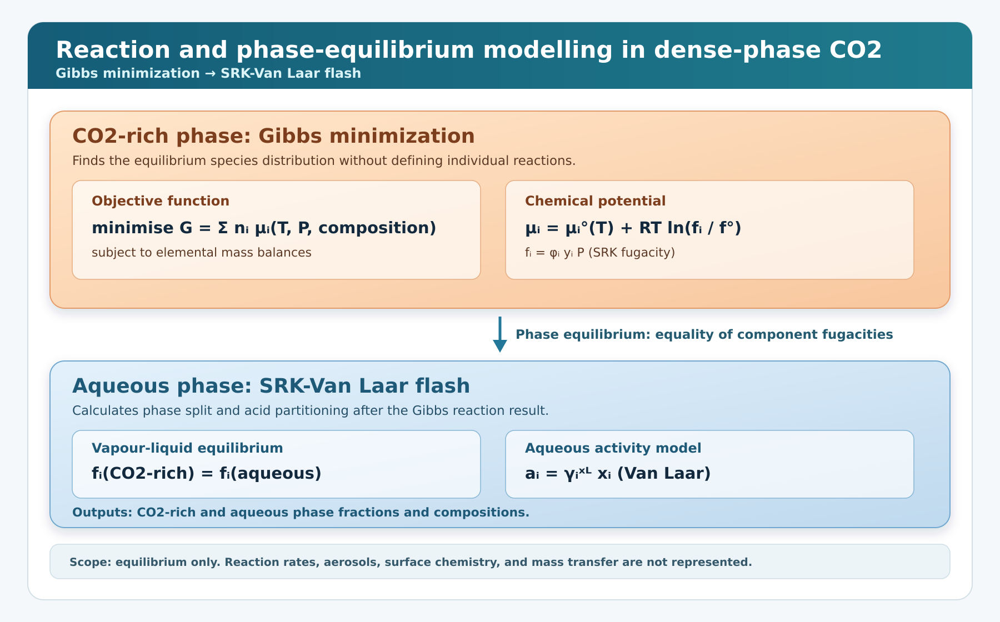
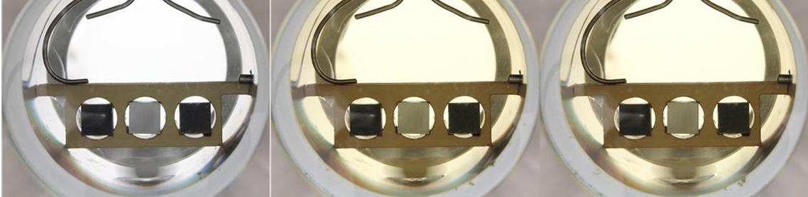
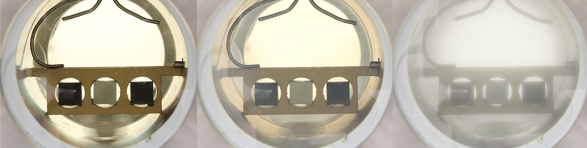
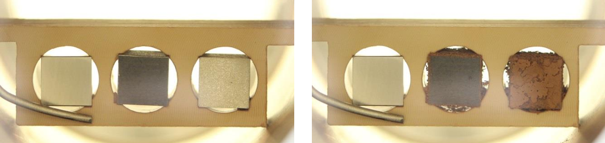
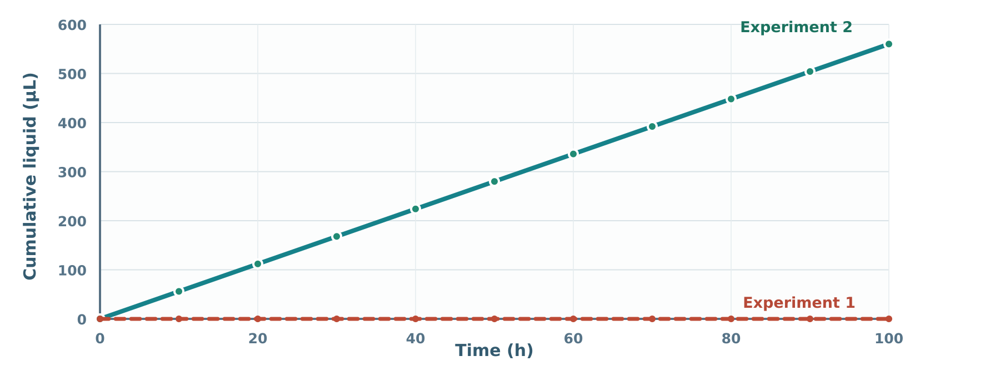

Experiment 1100 bar | 25 C
H2S 675 ppmSO2 72 ppmH2O 675 ppmO2 70 ppm
No visible fog or acid drop-out; coupon surface changes were observed.
Coupling reaction thermodynamics with phase equilibria to screen for corrosive acid formation in dense-phase CO2.
Why it matters
H2S, SO2, NOx, H2O and O2 can react in CO2-rich streams to form corrosive acids. Reactions may occur at the steel surface or in the bulk phase, where an acid-rich liquid can form and create a severe local corrosion environment.
Approach
Gibbs minimization calculates the single-phase equilibrium composition without prescribing every reaction pathway. Its outlet composition is then flashed with SRK-Van Laar to test for CO2-rich and aqueous-phase partitioning.

Experimental comparison
Stainless-steel autoclave tests at 25 C, with visual monitoring of phase formation.
No visible fog or acid drop-out; coupon surface changes were observed.
Visible fog and stronger reactions indicate formation of a separate acidic phase.




Model results
Low acid formation; no separate liquid phase predicted.
Concentrated H2SO4-rich liquid phase predicted, consistent with observed fog.
Outlet-concentration deviations point to kinetic, transport, or surface effects beyond equilibrium.
Conclusion
Gibbs minimization is valuable because it evaluates many impurities without specifying individual reactions. It is a thermodynamic screening tool, not a corrosion-rate model: kinetics, non-equilibrium behaviour and surface reactions can dominate in dense-phase CO2. Decisions require quantitative validation against experiments.